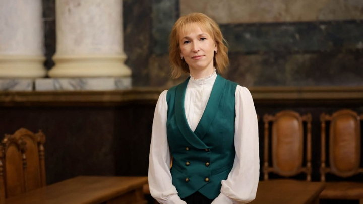
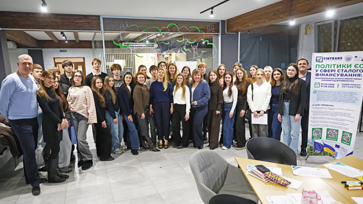
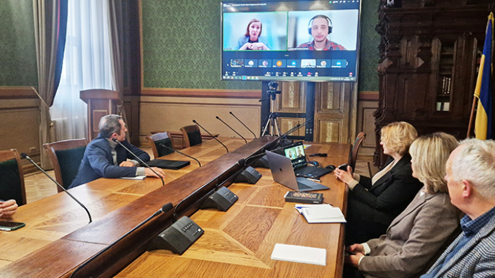
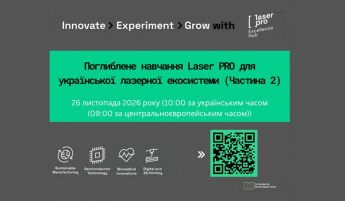
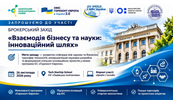

Новини університету

Обрання Наталії Шаховської заступницею голови Спілки ректорів

Проведення фінансового заходу ESG Finance Day в університеті

Презентація програми підготовки викладачів від фінських партнерів






